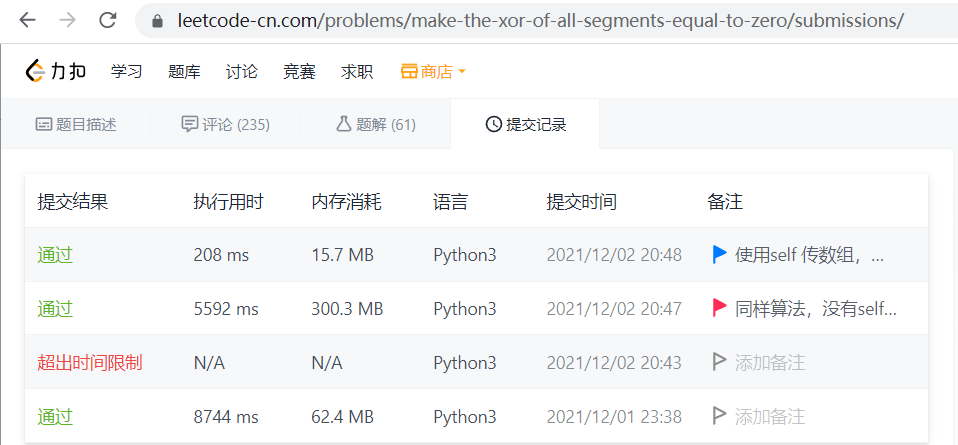

Speed up python by remove enclosure
Speed up 20 times
The snap is from test code

while the time comsuming code of 5592 ms and 208 ms is as below, the 5592 ms code use cache for speed up and slower 20 time than the code only remove enclosure:
- 5592 ms code which use cache
-
# 同样算法，没有self数组传递，就算加上cache速度慢 20倍 相对于 q44.py https://leetcode-cn.com/problems/make-the-xor-of-all-segments-equal-to-zero/submissions/ from collections import defaultdict import functools class Solution: def minChanges(self, nums: list[int], k: int) -> int: n = len(nums) frequent = [defaultdict(int) for _ in range(k)] changeToMode =n for i in range(n): frequent[i%k][nums[i]] +=1 xorSum =0 mode = [0]*k modeFreq = [0]* k for group in range(k): for num,freq in frequent[group].items(): if freq > modeFreq[group]: modeFreq[group] = freq mode[group] = num xorSum ^= mode[group] changeToMode -= modeFreq[group] res = 10**5 for group in range(k): res = min(res, changeToMode + modeFreq[group] - frequent[group].get(xorSum ^ mode[group],0)) @functools.lru_cache(None) def dfs(group,xorSum,changed): nonlocal res if changed > res: return if group ==k -1: res = min(res, changed + modeFreq[group] - frequent[group].get(xorSum,0)) return for num, f in frequent[group].items(): dfs(group + 1, xorSum ^ num, changed + modeFreq[group] -f) dfs(0,0,changeToMode) return res nums=[165,22,35,196,128,58,159,47,104,34,228,43,249,226,157,6,174,117,234,141,166,83,170,143,99,133,199,196,207,142,101,89,122,127,15,38,255,185,109,232,115,76,188,254,95,177,241,37,70,45,193,241,76,76] k=21 re = Solution().minChanges(nums , k ) print(re) - 208 ms code which not use cache
-
from collections import defaultdict import functools class Solution: def minChanges(self, nums: list[int], k: int) -> int: n = len(nums) self.frequent= [defaultdict(int) for _ in range(k)] changeToMode =n for i in range(n): self.frequent[i%k][nums[i]] +=1 xorSum =0 mode = [0]*k self.modeFreq = [0]* k for group in range(k): for num,freq in self.frequent[group].items(): if freq > self.modeFreq[group]: self.modeFreq[group] = freq mode[group] = num xorSum ^= mode[group] changeToMode -= self.modeFreq[group] self.res = 10**5 for group in range(k): self.res = min(self.res, changeToMode + self.modeFreq[group] - self.frequent[group].get(xorSum ^ mode[group],0)) self.dfs(0,0,changeToMode) return self.res @functools.lru_cache(None) def dfs(self, group,xorSum,changed): if changed > self.res: return if group ==k -1: self.res = min(self.res, changed + self.modeFreq[group] - self.frequent[group].get(xorSum,0)) return for num, f in self.frequent[group].items(): self.dfs(group + 1, xorSum ^ num, changed + self.modeFreq[group] -f) nums=[165,22,35,196,128,58,159,47,104,34,228,43,249,226,157,6,174,117,234,141,166,83,170,143,99,133,199,196,207,142,101,89,122,127,15,38,255,185,109,232,115,76,188,254,95,177,241,37,70,45,193,241,76,76] k=21 re = Solution().minChanges(nums , k ) print(re)
0.1.0*